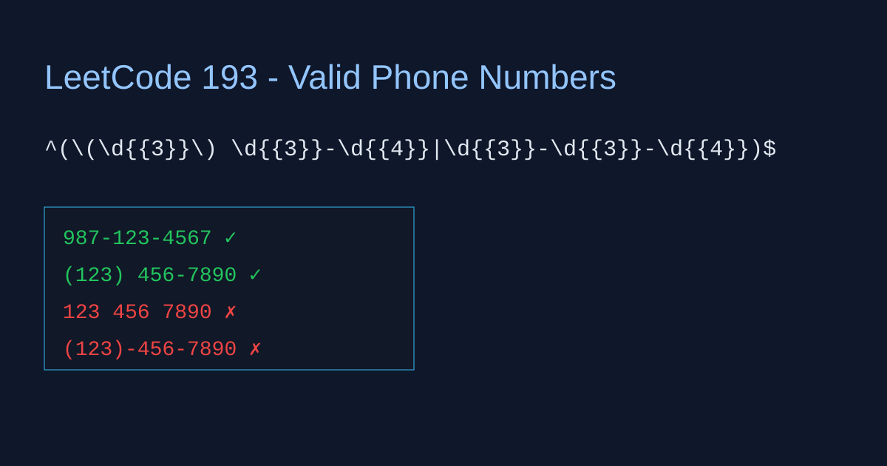

LeetCode 193: Valid Phone Numbers (Regex Filtering)
LeetCode 193RegexStringToday we solve LeetCode 193 - Valid Phone Numbers.
Source: https://leetcode.com/problems/valid-phone-numbers/

English
Problem Summary
Given a text file where each line is a candidate phone number, print only lines that match one of two valid formats: (xxx) xxx-xxxx or xxx-xxx-xxxx.
Key Insight
Use one anchored regular expression with alternation. Anchors ^ and $ ensure the whole line matches, and | joins the two acceptable patterns.
Complexity Analysis
Let n be number of lines and L average length. Time O(n·L), extra space O(1) besides output.
Reference Implementations (Java / Go / C++ / Python / JavaScript)
class Solution {
public List validPhoneNumbers(List lines) {
List ans = new ArrayList<>();
Pattern p = Pattern.compile("^(\\(\\d{3}\\) \\d{3}-\\d{4}|\\d{3}-\\d{3}-\\d{4})$");
for (String line : lines) {
if (p.matcher(line).matches()) ans.add(line);
}
return ans;
}
} func validPhoneNumbers(lines []string) []string {
re := regexp.MustCompile(`^(\(\d{3}\) \d{3}-\d{4}|\d{3}-\d{3}-\d{4})$`)
ans := make([]string, 0)
for _, line := range lines {
if re.MatchString(line) {
ans = append(ans, line)
}
}
return ans
}vector validPhoneNumbers(const vector& lines) {
regex re(R"(^(\(\d{3}\) \d{3}-\d{4}|\d{3}-\d{3}-\d{4})$)");
vector ans;
for (const string& s : lines) {
if (regex_match(s, re)) ans.push_back(s);
}
return ans;
} import re
def valid_phone_numbers(lines):
p = re.compile(r'^(\(\d{3}\) \d{3}-\d{4}|\d{3}-\d{3}-\d{4})$')
return [line for line in lines if p.match(line)]function validPhoneNumbers(lines) {
const re = /^(\(\d{3}\) \d{3}-\d{4}|\d{3}-\d{3}-\d{4})$/;
return lines.filter(line => re.test(line));
}中文
题目概述
给你一个文本文件，每行是一个电话号码候选。只输出满足两种格式之一的行：(xxx) xxx-xxxx 或 xxx-xxx-xxxx。
核心思路
使用一个带首尾锚点的正则表达式，并用 | 连接两种合法模式。这样可保证整行完全匹配，不会出现部分匹配通过。
复杂度分析
设行数为 n，平均长度为 L。时间复杂度 O(n·L)，除输出外额外空间 O(1)。
多语言参考实现（Java / Go / C++ / Python / JavaScript）
class Solution {
public List validPhoneNumbers(List lines) {
List ans = new ArrayList<>();
Pattern p = Pattern.compile("^(\\(\\d{3}\\) \\d{3}-\\d{4}|\\d{3}-\\d{3}-\\d{4})$");
for (String line : lines) {
if (p.matcher(line).matches()) ans.add(line);
}
return ans;
}
} func validPhoneNumbers(lines []string) []string {
re := regexp.MustCompile(`^(\(\d{3}\) \d{3}-\d{4}|\d{3}-\d{3}-\d{4})$`)
ans := make([]string, 0)
for _, line := range lines {
if re.MatchString(line) {
ans = append(ans, line)
}
}
return ans
}vector validPhoneNumbers(const vector& lines) {
regex re(R"(^(\(\d{3}\) \d{3}-\d{4}|\d{3}-\d{3}-\d{4})$)");
vector ans;
for (const string& s : lines) {
if (regex_match(s, re)) ans.push_back(s);
}
return ans;
} import re
def valid_phone_numbers(lines):
p = re.compile(r'^(\(\d{3}\) \d{3}-\d{4}|\d{3}-\d{3}-\d{4})$')
return [line for line in lines if p.match(line)]function validPhoneNumbers(lines) {
const re = /^(\(\d{3}\) \d{3}-\d{4}|\d{3}-\d{3}-\d{4})$/;
return lines.filter(line => re.test(line));
}
Comments